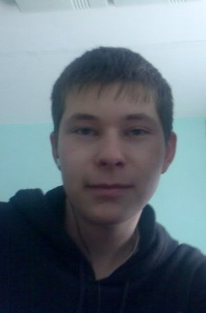
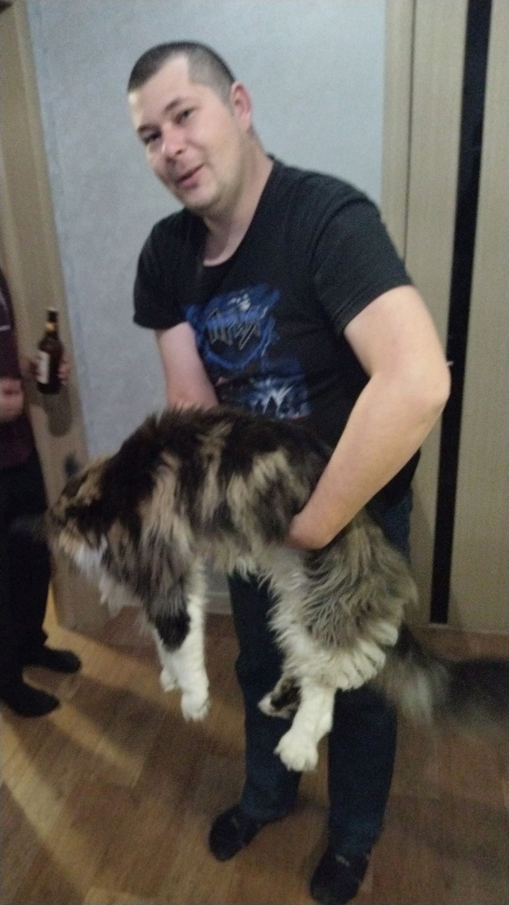
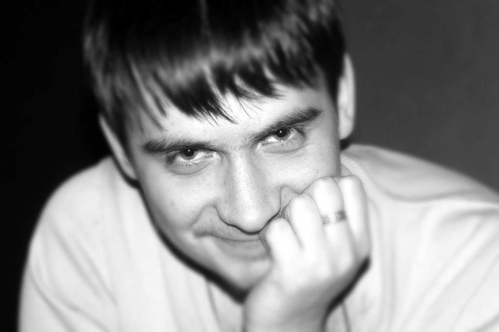
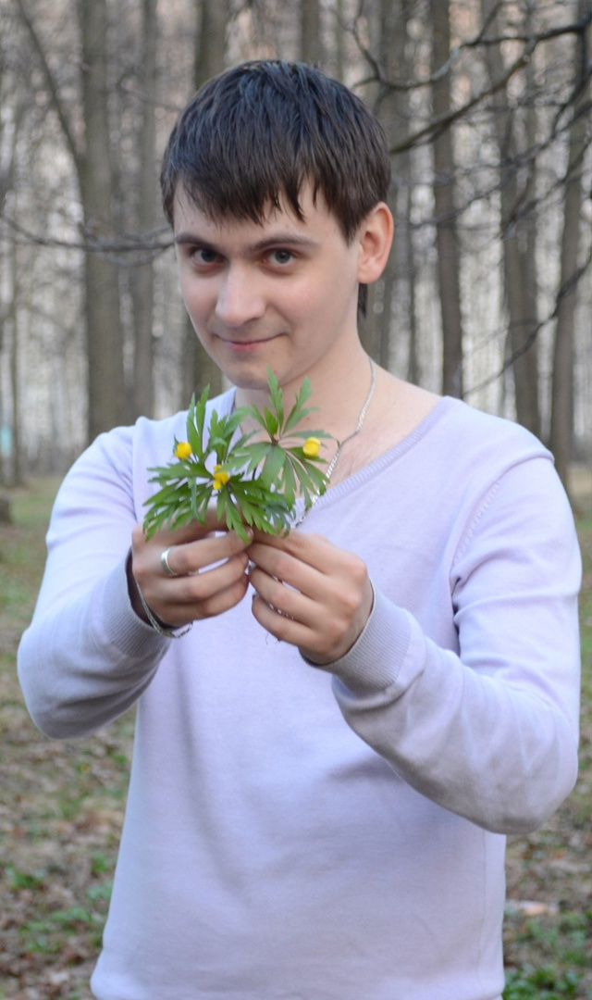
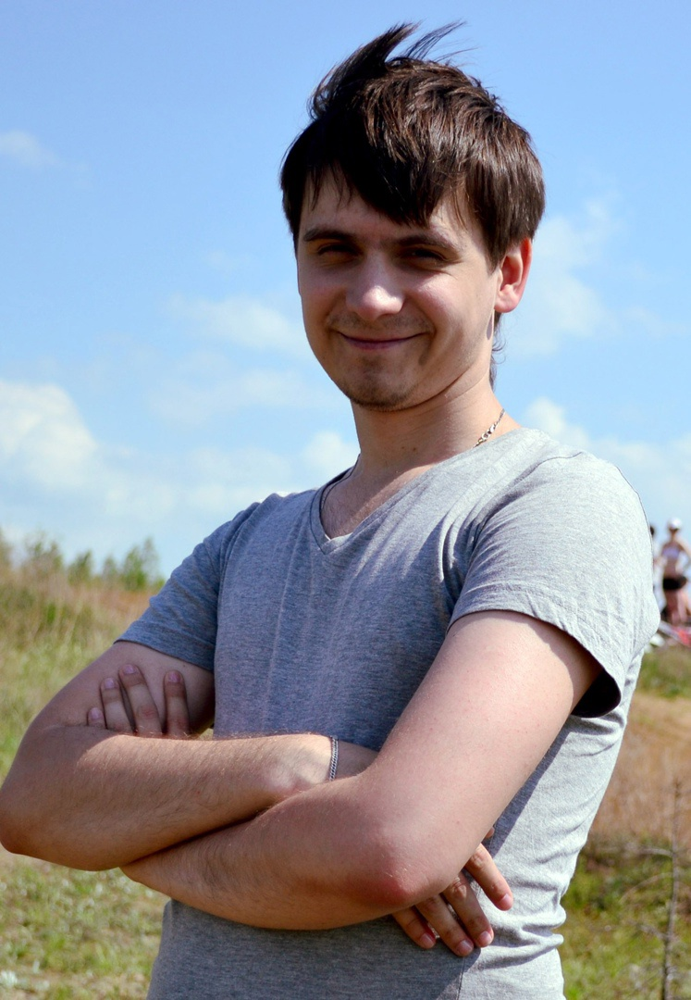

Выпускники 2009 года
Знакомьтесь: Сураев Вячеслав выпускник 2009 года. Родом Вячеслав из р.п. Шатки.
❗На сегодняшний день проживает в Нижнем Новгороде
❗Вячеслав имеет диплом только нашего колледжа.
❗После окончания колледжа Вячеслав постоянно работает с обслуживанием ПК.
❗2012-2016 годы - Сервис центр "Руки из плеч", выездной инженер, Нижний Новгород
❗ с 2016 года и по сегодняшний день - ООО "ИТ-НН", должность: системный администратор, работа с нотариусами по всей нижегородской области обслуживание ОС. Прокладка и организация сети, сборка и обновление рабочих мест.
❗И еще у Вячеслава есть хобби: он любит делась колбасу собственного производства😉!!!!



Итак знакомьтесь: Дмитрий Николаев выпускник 2009 года. Это годы учебы были самыми насыщенными: КВН среди групп специальности, множество конкурсов и проектов. И нам казалось, что Дима один из самых улыбчивых и безотказных людей😉!
❗Дмитрий имеет только диплом нашего колледжа.
❗После окончания колледжа занялся видеомонтажом.
❗2009-2018 года Дмитрий работал на телевидении телевидение Арзамасского края.
❗ с 2018 по настоящее время работает в телерадио компании МУ "ТРК Арзамас", режиссер видеомонтажа
❗ На вопрос о ценностях в жизни отвечает - семья и работа
❗И кстати Дим, ты давно обещал в гости!!!! Будем рады видеть!!!!


